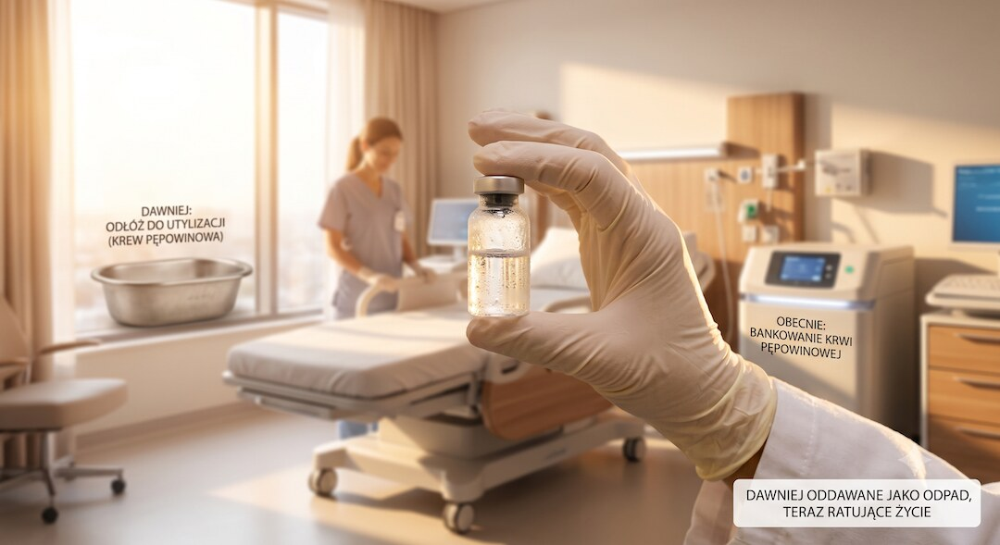
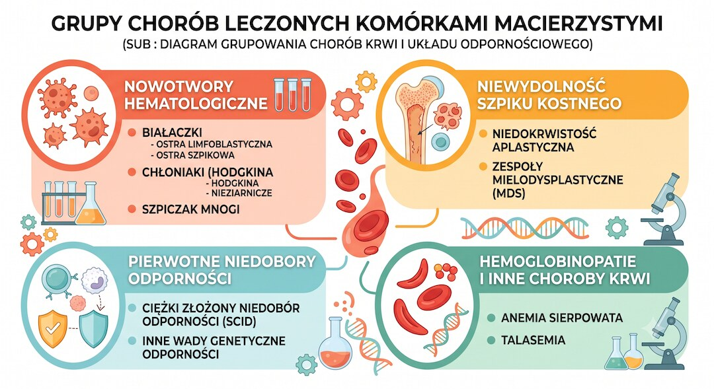

Szybka odpowiedź
Krew pępowinowa jest uznanym źródłem komórek krwiotwórczych do leczenia wybranych chorób krwi, odporności i metabolizmu. Nie jest jednak polisą na każdą przyszłą chorobę. ACOG nie popiera rutynowego prywatnego bankowania bez konkretnego wskazania rodzinnego i rekomenduje bankowanie publiczne, gdy jest dostępne. Koszt prywatny obejmuje pobranie, badania oraz wieloletni abonament.
Kluczowe wnioski
- Komórki z krwi pępowinowej mają realne zastosowania transplantacyjne, ale nie leczą dowolnej choroby.
- Własny materiał może nie nadawać się do leczenia choroby genetycznej lub części nowotworów tego samego dziecka.
- Bank publiczny i prywatny realizują inne cele; darowizna publiczna nie rezerwuje materiału dla rodziny.
- Porównując cenę, zsumuj opłatę początkową, badania, przechowywanie, indeksację i warunki zakończenia umowy.
Co rzeczywiście leczy się krwią pępowinową?
Zawarte w niej komórki krwiotwórcze wykorzystuje się w transplantologii między innymi w wybranych białaczkach, chłoniakach, niedoborach odporności i chorobach metabolicznych. To konkretne wskazania, nie ogólna „regeneracja organizmu”. Eksperymentalne zastosowania badane w próbach klinicznych nie powinny być przedstawiane jako dostępne, potwierdzone leczenie.
Rozróżnienie terapii zatwierdzonej od eksperymentu omawia poradnik oceny obietnic medycznych oraz analiza badań klinicznych AI.

Dlaczego własny materiał nie zawsze pomoże dziecku?
W chorobie genetycznej własna krew może zawierać tę samą zmianę, a w części nowotworów może zawierać komórki poprzedzające chorobę. Dlatego możliwość użycia zależy od rozpoznania i decyzji transplantologa. Materiał od zgodnego dawcy bywa właściwszy niż autologiczny depozyt przechowywany od porodu.
Najważniejsze pytanie brzmi nie „czy komórki są cenne?”, lecz „w jakim rozpoznaniu ten konkretny materiał może zostać użyty?”. Mechanizmy genetyczne od testów konsumenckich odróżnia artykuł o metylacji DNA.

Bank publiczny czy prywatny - czym się różnią?
Darowizna do banku publicznego powiększa zasób dostępny dla zgodnego biorcy i nie gwarantuje zachowania jednostki dla rodziny. Bank prywatny przechowuje materiał dla rodziny za opłatą. ACOG wskazuje, że rutynowe prywatne bankowanie bez znanego wskazania nie jest wspierane dowodami; uzasadnieniem może być chory krewny kwalifikujący się do przeszczepu.
Przed decyzją poproś o pisemne dane dotyczące liczby wydanych jednostek i rzeczywistych zastosowań, nie tylko liczbę przechowywanych próbek.
Jak policzyć pełny koszt bankowania?
Cenniki zmieniają się i zawierają warianty promocyjne. Na 24 sierpnia 2026 r. publiczny cennik PBKM pokazywał osobne opłaty za umowę, etap po badaniach i miesięczny abonament po pierwszym roku. Dlatego nie porównuj jednej raty. Zsumuj cały wybrany okres oraz sprawdź waloryzację, transport, badania, wydanie materiału i zwrot opłat.
Tak jak przy innych usługach zdrowotnych, oddziel reklamę od wskazania klinicznego; podobną analizę znajdziesz w artykule o obietnicach terapii.
| Pytanie | Bank publiczny | Bank prywatny |
|---|---|---|
| Dla kogo? | Dla zgodnego biorcy | Dla rodziny zgodnie z umową |
| Opłata rodziny | Zwykle brak | Opłaty początkowe i okresowe |
| Dostępność | Tylko wybrane placówki | Zależna od oferty firmy |
| Główne uzasadnienie | Zasób dawców | Konkretne wskazanie rodzinne lub wybór rodziców |
Krew pępowinowa jest wartościowym materiałem transplantacyjnym, ale wartość medyczna nie oznacza, że każdy prywatny depozyt zostanie wykorzystany.
Najczęściej zadawane pytania
Czy warto bankować krew pępowinową prywatnie?
Najsilniejszym wskazaniem jest konkretny chory krewny, dla którego transplantolog rozważa taki materiał. Rutynowe bankowanie nie jest zalecane przez ACOG.
Czy krew pępowinowa leczy autyzm lub porażenie mózgowe?
Takie zastosowania są badane, ale nie należy przedstawiać ich jako rutynowych, potwierdzonych terapii dostępnych z każdego depozytu.
Czy własna krew może leczyć białaczkę?
Nie zawsze; zależy to od choroby, jakości materiału i ryzyka obecności komórek związanych z chorobą. Decyduje transplantolog.
Ile kosztuje przechowywanie?
Koszt zależy od wariantu i czasu. Trzeba zsumować umowę, badania, raty lub opłatę po porodzie oraz abonament.
Źródła
- ACOG opinion on cord blood banking
- AAP policy on cord blood banking
- Cord blood banking review
- PBKM current price list
Uwaga: Artykuł ma charakter informacyjny i edukacyjny. Nie zastępuje konsultacji, diagnozy ani indywidualnego leczenia.